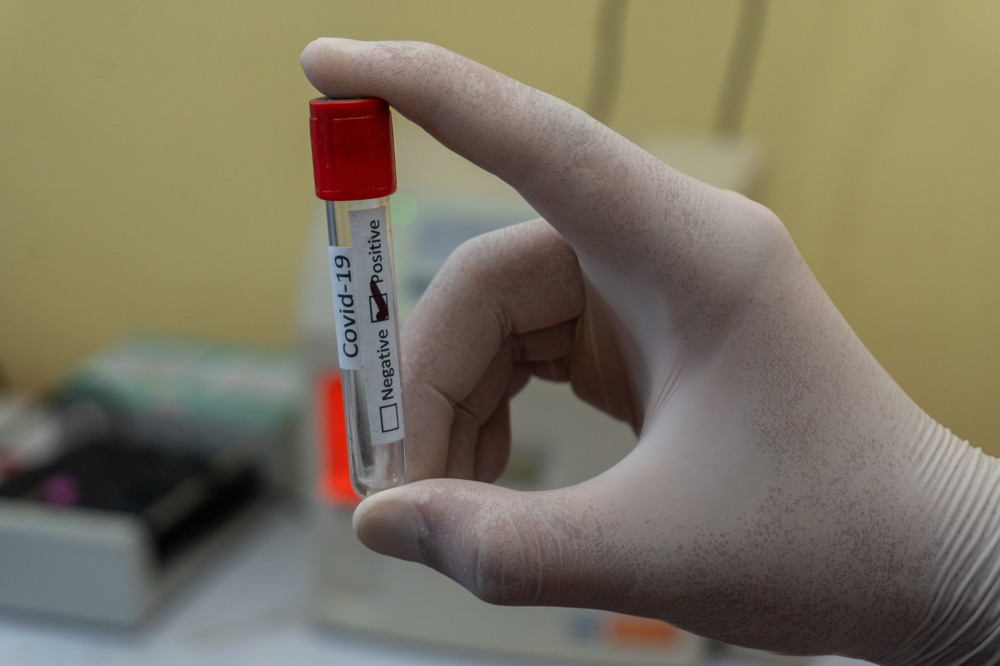

2019년 12월 하순, 중국 우한지역에서 원인불명 폐렴환자들이 늘어남에 따라 중국 질병예방통제센터(CCDC)와 의료진, 그리고 과학자들은 신속하게 신종 질병 대응연구팀을 구성했다. 대응팀은 환자의 기관지 폐포 세척액을 분석해 신종 코로나바이러스(2019-nCoV 또는 SARS-CoV-2)를 발견하고, 전자현미경 사진과 해독한 2019-nCoV의 유전체 서열 전체를 학계에 빠르게 발표했다(Lu et al., 2020; Wu et al., 2020; Zhou et al., 2020; Zhu et al., 2020). 최초 확진자가 발생한지 불과 한 달만의 일로, 이를 토대로 전 세계 과학자들이 많은 연구결과를 내놓고 있다. 코로나바이러스는 계절유행성 감기를 유발하는 바이러스 중 하나다. 하지만 가볍게 여길 것은 결코 아니다. 그간 대규모 감염사태가 벌어졌던 2002년 사스(SARS‧중증급성호흡기증후군) 와 2015년 메르스(MERS‧중동호흡기증후군)의 원인 역시 코로나바이러스였다. 이번에 발견된 2019-nCoV도 빠른 전파와 함께 심각한 호흡기증후군 증상을 나타내는 환자 수가 늘어나면서 전 세계적으로 큰 사회적 문제를 야기하고 있다.
코로나바이러스를 투과전자현미경(TEM)으로 관찰하면, 바이러스 막 바깥쪽 표면에 돌기형태의 단백질(스파이크단백질)이 촘촘히 달려있는 구조를 볼 수 있다. 그 형태가 태양의 코로나와 비슷해 코로나바이러스라는 이름이 붙었다. 축구화 밑바닥의 스파이크가 미끄러짐을 방지하는 것처럼, 스파이크단백질은 숙주세포와 강하게 결합하여 바이러스가 숙주세포로 빠르게 침투하도록 지지해준다.